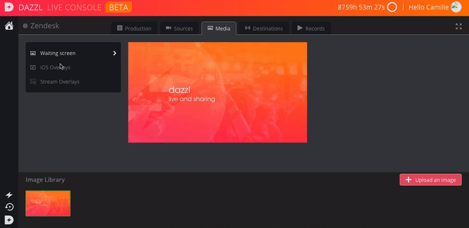
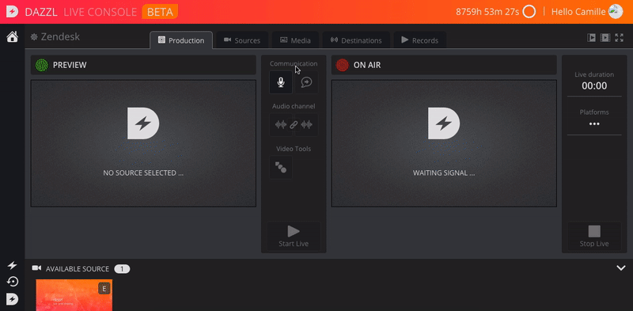
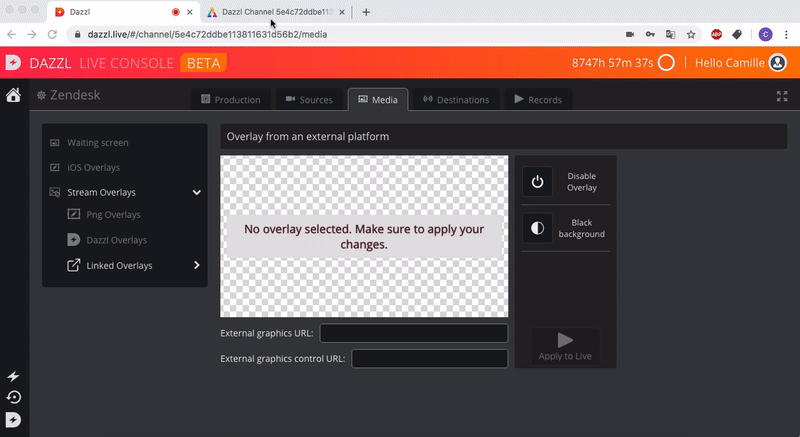

You have different ways to add overlays to your event broadcast.
First, you must have created your event and started it. Then select the "Media" tab.
You can then add overlays only for your iOS sources, png images with transparent backgrounds, use Dazzl's pre-designed templates, or even create and import more complex overlays using Singular.
Png Overlays
Click on "Png Overlays".
To add PNG Overlays, click on "Upload an image". You must have created an image with a transparent background, adding your graphics which will be static. This image must respect the right format (720p).
Then select the image you uploaded, and click on "Apply to live". Your overlay is then applied to your stream. You can change the background to better see the final rendering.

Use Dazzl Overlays.
Click "Dazzl Overlays".
First of all, add the logo you want to use by clicking "Logo for templates". Then click on "apply to live"
Once this is done, go back to the "Template Librairy" tab.
Select the template you wish to use. Then click on "Apply to live". You can then modify the elements of the template (logo, colors, texts, etc), by clicking on "Template control". This will open the Singular application, allowing you to make the changes. Click here for more information on how to use Singular.

By clicking on "Template control", you can modify on singular all the settings, including the colors, the text, the logo, etc. In the Singular app, you can manage your Overlays, when preparing your live or in the same time than you are broadcasting it.
Using Singular Overlays
You can also use your own singular account by selecting "Linked Overlays". Then paste the preview link in "External Graphics URL", and the control app link in "External Graphic Control URL".
Click on "Apply to live" to add them to your feed. Once again, Click here for more information on how to use Singular.
